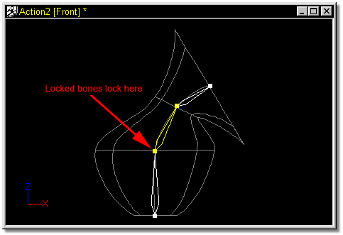

You can lock a bone in a characters hierarchy by selecting the bone and clicking the Lock Bone icon on the Tool panel. The Lock Bone icon will always show the state of the selected handle (DOWN if locked, UP if not Locked). If a bone is moved that is further up the chain than a locked bone, no calculations will occur past the locked bone. Similarly, if a bone is moved that is further down the chain than a locked bone, no calculations will move up past the locked bone. The default bone in any character can not be locked.

To Unlock Bones, select the bones you want to unlock with the mouse and click the Lock Bone icon on the tool panel.
Related Topics:
Creating Skeletal Motions
Clearing Skeletal Actions
Saving Skeletal Motions
Using Stride Length
Using Poses
Using Dopesheets